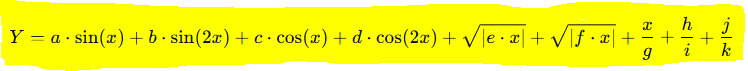

Corte 1 Parcial
Presentado por:
Jesús Alejandro Guerrero Alvarez - Código: 2216710
Juan Manuel Tejada Fajardo - Código: 2216685
Ingrese los coeficientes y los valores de X

Resultados
Valor Y Mínimo:
Valor Y Máximo:
Cortes detectados:
Tabla de valores generados de X e Y
Gráfico